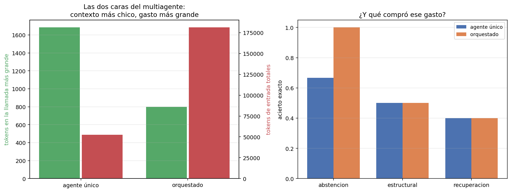

05 — Arquitecturas multiagente: cuándo gana un solo agente¶
Un subagente no es un modelo más listo: es un contexto separado¶
La forma en que se vende el multiagente —"un equipo de agentes especializados colabora"— sugiere que la ganancia es de capacidad. No lo es: el modelo es el mismo en todos los nodos. Lo único que un subagente aporta y un agente único no puede tener es un contexto propio: sus observaciones, sus errores y sus rodeos mueren en su bucle, y al orquestador le vuelve un resumen.
Eso lo hace un problema de estructura organizacional. Un departamento no piensa mejor que un individuo; procesa información por separado y le reporta al resto una versión comprimida. Las ganancias y las patologías de un sistema multiagente son las de cualquier organización con departamentos: menos sobrecarga arriba, y fronteras que cortan justo donde el trabajo necesitaba pasar.
El experimento¶
Dos arquitecturas, las mismas 12 tareas, el mismo modelo, las mismas capacidades:
agente único : alcance_normativo, buscar_corpus, leer_norma, responder, vecinos_grafo
orquestador : delegar, responder ← no toca el corpus
trabajador 'documental' : buscar_corpus, leer_norma, responder
trabajador 'estructural': alcance_normativo, vecinos_grafo, responder
El orquestador no tiene acceso directo al corpus. Sólo puede delegar y
responder, que es la versión pura del patrón y la que hace visible el efecto. La
división del trabajo tampoco es arbitraria: separa el texto de las normas
(02-retrieval) de la estructura de relaciones (05-ontologias), que es la
frontera natural del dominio.
Los menús, medidos con el aparato de §3:
menú tokens de esquema
----------------------------------------------
agente único (5 tools) 778
orquestador (2 tools) 325
trabajador documental 379
trabajador estructural 533
El resultado¶
métrica agente único orquestado delta
------------------------------------------------------------------------------
acierto exacto 0.500 0.583 +0.083
F1 de docs citados 0.500 0.583 +0.083
tareas sin respuesta 2 1 -1
pasos del agente principal 48 40 -8
pasos de trabajadores 0 152 +152
pasos totales (= llamadas al modelo) 48 192 +144
tokens de entrada TOTALES 52,416 181,229 +128,813
contexto máximo por llamada 1,684 798 -886

Las dos caras, en una frase: el orquestador procesa contextos de la mitad de tamaño y gasta 3,5 veces más tokens en total, para acertar una tarea más de doce.
El aislamiento es real y se ve en el reparto por partida:
partida agente único orquestador
------------------------------------------------
herramientas 37,392 13,040
observaciones 15,912 3,429
Las observaciones del orquestador son sólo los resúmenes que le devuelven los trabajadores: 3.429 tokens contra 15.912. Todo lo que los trabajadores leyeron —cada fragmento, cada página, cada error— murió en sus bucles. Y la partida de herramientas cae a un tercio porque el orquestador sólo ve dos esquemas.
De dónde salió la única tarea ganada¶
El delta de acierto no está repartido: viene entero de la familia de abstención.
familia agente único orquestado delta
--------------------------------------------------------
abstencion 0.667 1.000 +0.333
estructural 0.500 0.500 0.000
recuperacion 0.400 0.400 0.000
La tarea es t-10, "¿Cuál es la multa por infracción a la Ley de Transparencia de
2022?", cuya respuesta correcta es que no consta en el corpus. El agente único
quema los ocho pasos alternando búsquedas y lecturas, y nunca responde. El
orquestador:
0 delegar(documental, "¿Cuál es la multa por infracción a la Ley de Transparencia de 2022?")
→ [trabajador 'documental' — 6 pasos, sin conclusión: max_pasos]
1 delegar(documental, "¿Qué establece la Ley de Transparencia de 2022 sobre las multas...?")
→ [trabajador 'documental' — 6 pasos, sin conclusión: max_pasos]
2 delegar(estructural, "¿Qué norma regula las multas por infracción a la Ley de Transparencia...?")
→ [trabajador 'estructural' — 6 pasos, sin conclusión: max_pasos]
3 responder("No consta en el corpus.")
El mecanismo es interesante y no es el que la arquitectura publicita: el fracaso de la delegación es información. Tres especialistas reportando "no pude concluir" es una señal explícita y barata de leer; ocho búsquedas con resultados mediocres es la misma evidencia en un formato que hay que interpretar. La abstracción no agregó capacidad, agregó un resumen negativo legible.
Es un mecanismo plausible con n=1 tarea. No alcanza para concluir que el multiagente abstiene mejor; alcanza para saber qué habría que medir con más tareas de abstención.
Dónde se rompe: la frontera cortó una dependencia¶
Lo más útil de esta sección no es la tabla, es la patología. En t-08 —la tarea
del DS 250 que viene fallando desde §1— el orquestador delegó ocho veces:
0 delegar(estructural, "¿Qué documentos dependen en hasta dos saltos del DS 250?") → sin conclusión
1 delegar(estructural, "¿Qué documentos dependen directamente del DS 250?") → sin conclusión
2 delegar(estructural, "¿Qué documentos modifican o derogan al DS 250?") → sin conclusión
3 delegar(estructural, "¿Qué documentos dependen en un salto del DS 250?") → sin conclusión
4 delegar(estructural, "¿Qué documentos dependen del DS 250?") → sin conclusión
5 delegar(estructural, "¿Qué documentos dependen en hasta dos saltos del DS 250?") → sin conclusión
6 delegar(estructural, "¿Qué documentos dependen en un salto del DS 250?") → sin conclusión
7 delegar(estructural, "¿Qué documentos dependen del DS 250 en un salto?") → sin conclusión
Ocho delegaciones × seis pasos de trabajador = 48 llamadas al modelo en una sola tarea, todas inútiles. Y adentro del trabajador:
0 alcance_normativo(doc_id="ds-250") -> ERROR ... Siguiente paso: usá 'buscar_corpus'...
1 vecinos_grafo(doc_id="ds-250") -> ERROR ...
2 alcance_normativo(doc_id="ds-250-ds") -> ERROR ...
3 vecinos_grafo(doc_id="ds-250-ds") -> ERROR ...
4 alcance_normativo(doc_id="ds-250-ds-250") -> ERROR ...
5 alcance_normativo(doc_id="ds-250-ds-250-ds") -> ERROR ...
El trabajador estructural degenera concatenando el identificador. Y la causa es doble, con las dos mitades en el diseño y no en el modelo:
- La división del trabajo cortó una dependencia. Resolver "DS 250" a
decreto-03-reglamento-compras-publicas.txtes entity resolution (05 §4), y es un prerrequisito de recorrer el grafo. Está en el departamento documental; el grafo, en el estructural. El agente único de §3 lo resolvió en un paso:buscar_corpus("DS 250"). - El error le pedía algo imposible. El mensaje de
vecinos_grafodice "usá 'buscar_corpus' para ubicar el documento primero" — ybuscar_corpusno está en el menú del trabajador estructural. El contrato de error que §3 midió como una mejora se volvió, en otro contexto, una instrucción irrealizable.
El contrato de error no es una propiedad de la herramienta: es una propiedad de la herramienta en su registro. La misma tool, montada en dos menús distintos, da un consejo útil en uno y una orden imposible en el otro.
- El orquestador no puede diagnosticar. Lo único que ve es "sin conclusión: max_pasos". No sabe que el problema era un identificador irresoluble, así que hace lo único que puede: reformular. Ocho veces. El aislamiento de contexto que ahorra tokens es el mismo que impide diagnosticar el fallo — no son dos propiedades, es una sola vista desde dos lados.
Los dos arreglos, medidos¶
Ambos problemas tienen arreglo obvio. Los dos se implementaron y se midieron, y el resultado es consistente con todo el módulo.
Arreglo 1 — que el error conozca el menú. El ToolRegistry detecta cuando un
siguiente_paso nombra una herramienta que no tiene y lo avisa:
métrica error ingenuo error consciente delta
------------------------------------------------------------------------------
acierto exacto 0.583 0.583 0.000
tareas sin respuesta 1 0 -1
pasos totales 192 176 -16
tokens de entrada TOTALES 181,229 172,820 -8,409
subtareas que el trabajador no concluyó 21 18 -3
Arreglo 2 — no partir la dependencia. El trabajador estructural recupera
buscar_corpus:
métrica agente único partido sin partir
--------------------------------------------------------------------------
acierto exacto 0.500 0.583 0.583
tareas sin respuesta 2 0 0
pasos totales 48 176 167
tokens de entrada TOTALES 52,416 172,820 168,377
contexto máximo por llamada 1,684 778 768
subtareas sin concluir — 18 16
Ninguno de los dos mueve el acierto. Los dos recortan desperdicio: menos pasos, menos tokens, menos subtareas abandonadas. Es exactamente el patrón de §1 y §3 —el harness arregla el mecanismo que ataca y el resultado no se mueve— repetido por tercera vez en el módulo, ahora en la capa de coordinación.
Y la familia estructural sigue en 0,500 en las tres configuraciones. t-08 no se
arregla con organización: sigue trabada donde §3 la dejó, en el criterio de parada.
Cuándo conviene cada arquitectura¶
Lo que este experimento permite afirmar, con la escala declarada:
| Situación | Arquitectura | Por qué |
|---|---|---|
| Contexto por tarea holgado (~1.700 tokens acá) | Un agente | El multiagente cuesta 3,5× para resolver un problema que no existe |
| Contexto cerca del límite del modelo | Orquestador | Es lo único que baja el pico por llamada (−53% acá) |
| Subtareas independientes | Orquestador | Sin dependencias cruzadas, el resumen no pierde nada que importe |
| Subtareas con dependencias (resolver un id antes de usarlo) | Un agente | Toda frontera que corte una dependencia se paga con reformulaciones |
| El fallo hay que diagnosticarlo | Un agente | El resumen esconde la causa; el orquestador sólo puede reformular |
| Costo por tarea acotado | Un agente | 3,5× de tokens y 4× de llamadas es el piso del overhead de coordinación |
La regla corta:
Antes de repartir el trabajo entre agentes, preguntá qué información se pierde en la frontera. Si la respuesta es "nada que el jefe necesite", el multiagente ahorra contexto. Si es "justo lo que hace falta para diagnosticar el fallo", el orquestador va a reformular la misma pregunta hasta quedarse sin pasos.
El patrón Claude Code planificador + Codex implementador¶
El caso concreto que motiva esta sección en la práctica del autor es una división de trabajo entre dos agentes de codificación. A la luz de lo anterior, funciona por razones que el experimento explica:
- La frontera no corta una dependencia. El plan es un artefacto completo y autocontenido: quien implementa no necesita volver a preguntar por qué se decidió algo, porque el plan lo dice. Es lo contrario del identificador irresoluble.
- El resumen que cruza es rico, no un "no pude concluir": un plan es larga y deliberadamente explícito. La frontera está diseñada para que pase información, no para comprimirla.
- El diagnóstico vuelve al humano, no al orquestador. Cuando la implementación
falla, quien lee el fallo tiene acceso a las dos mitades — que es precisamente lo
que le faltaba al orquestador de
t-08.
Y la advertencia que sale del mismo análisis: la división se degrada apenas el plan
deja de ser autocontenido. Un plan que dice "hacé lo que corresponda con los
errores" reproduce el siguiente_paso irrealizable a escala humana.
Estado del arte (2026)¶
| Aspecto | Estado | Detalle |
|---|---|---|
| Subagentes como aislamiento de contexto | ✅ Consenso | Es el mecanismo real; "más inteligencia" es marketing |
| Orquestador/trabajador | 🟢 Patrón dominante | La topología por defecto de los frameworks multiagente |
| Overhead de coordinación | 🟡 Reconocido, poco publicado | Se sabe que es alto; los factores medidos rara vez se reportan |
| Cuándo un agente le gana a varios | 🟡 En discusión | Recomendación frecuente de empezar con uno solo; poca evidencia comparativa publicada |
| Diagnóstico a través de la frontera | 🔴 Problema abierto | El resumen que ahorra contexto es el que impide diagnosticar |
| Contratos de error por registro | 🔴 No tratado | Las tools se escriben sin saber en qué menú las montan |
Límites¶
- 12 tareas, un modelo, una réplica. El +0,083 de acierto es una tarea, y además de abstención. Lo robusto es el overhead: 3,5× de llamadas y 3,2× de tokens no se explica por ruido.
- Una sola topología. Orquestador puro con dos trabajadores. No se probaron agentes que se pasen trabajo entre pares, ni jerarquías más profundas, ni un orquestador con acceso directo al corpus además de delegar — que probablemente sea la configuración práctica más razonable.
max_pasos=6para los trabajadores es un parámetro elegido, no barrido. Con más presupuesto, algunos trabajadores habrían concluido.- La división del trabajo es una de muchas. Se eligió la frontera natural del dominio (texto contra estructura) y resultó ser justo la que corta la dependencia de entity resolution. Otra división daría otros números.
Lo que viene en la próxima sección¶
Todas las herramientas de este módulo son de lectura, y por eso las llamadas
repetidas de t-08 fueron caras pero inocuas: 48 llamadas inútiles y ningún daño.
En cuanto una herramienta escriba algo, esa misma trayectoria deja de ser un
desperdicio y pasa a ser un incidente. §6 levanta el supuesto: permisos,
idempotencia y sandbox.
Conexiones¶
- §1: el mismo patrón por tercera vez —el harness mueve el proceso y no el resultado—, ahora en la capa de coordinación.
- §2: el contexto máximo por llamada es lo que el multiagente mejora; el total de tokens es lo que empeora. Las dos métricas salen del mismo reparto por partida.
- §3: los menús chicos de los trabajadores son la aplicación directa del peaje
por iteración, y el
siguiente_pasoirrealizable es el límite de aquel contrato de error. - §4: un cliente con varios servidores MCP conectados es este mismo problema de menú, sin la contrapartida del aislamiento.
05 §4(entity resolution): resolver "DS 250" a su llave canónica es la dependencia que la frontera departamental cortó.- §7:
t-08gastó 48 llamadas al modelo con acierto cero. Ninguna métrica de resultado ve eso, y por eso las trayectorias se evalúan aparte. - §8: 192 llamadas contra 48 para la misma tarea es la varianza de costo que esa sección trata.